📖 Słowniczek
Poznałeś już wiele nowych słów.
Sprawdź, czy pamiętasz ich znaczenie.
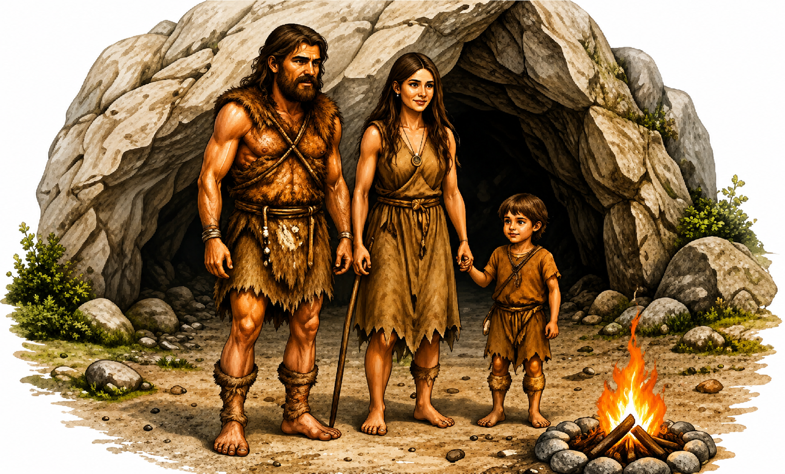
Praludzie
Najstarsi przodkowie współczesnego człowieka.
Найдавніші предки сучасної людини.

Ognisko
Miejsce, w którym ludzie rozpalali ogień.
Місце, де люди розпалювали вогонь.

Pięściak
Proste kamienne narzędzie używane przez praludzi.
Просте кам'яне знаряддя, яким користувалися первісні люди.
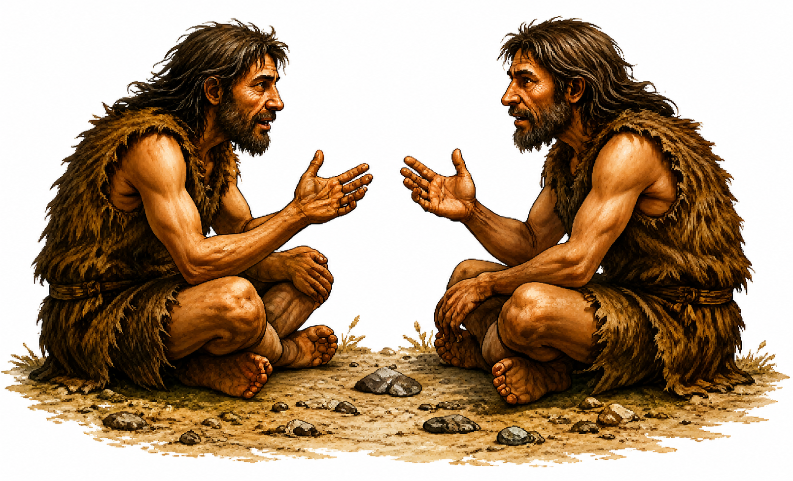
Mowa
Sposób porozumiewania się ludzi za pomocą słów.
Спосіб спілкування людей за допомогою слів.
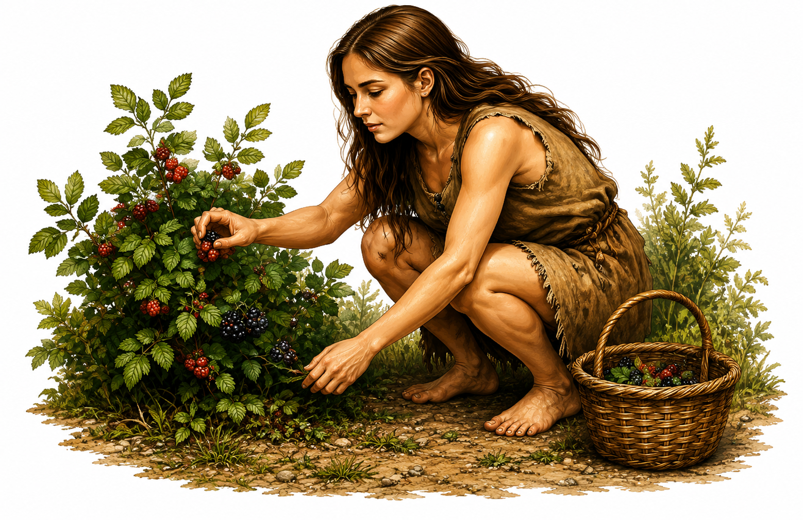
Zbieractwo
Zdobywanie pożywienia przez zbieranie roślin i owoców.
Добування їжі шляхом збирання рослин і плодів.
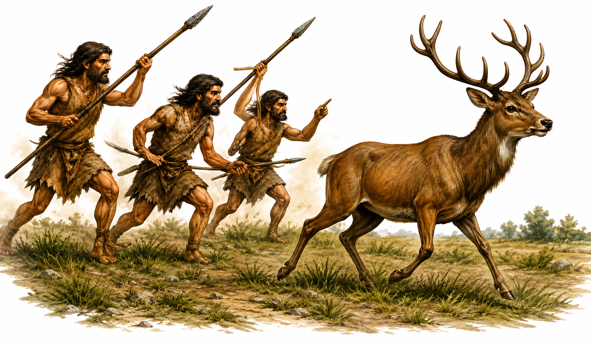
Myślistwo
Zdobywanie pożywienia przez polowanie na zwierzęta.
Добування їжі шляхом полювання на тварин.
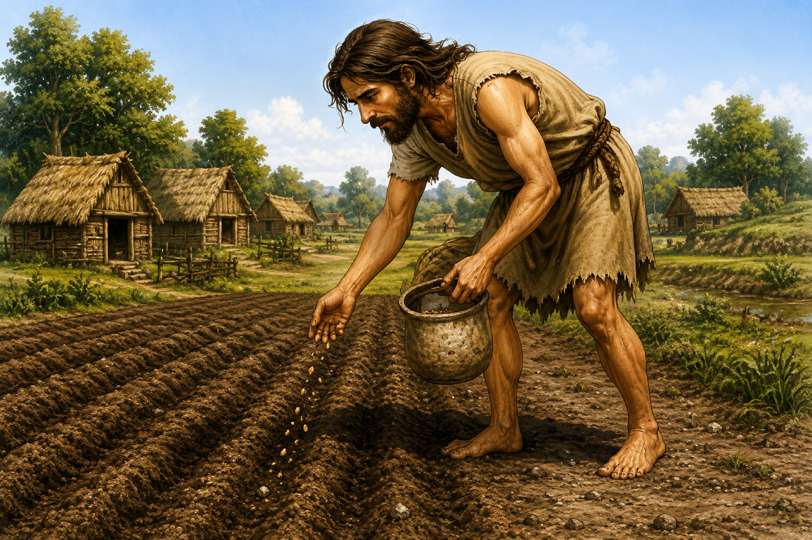
Rolnictwo
Uprawa ziemi i hodowla zwierząt.
Обробіток землі та розведення тварин.

Osada
Miejsce, w którym ludzie mieszkali na stałe.
Поселення, у якому люди жили постійно.
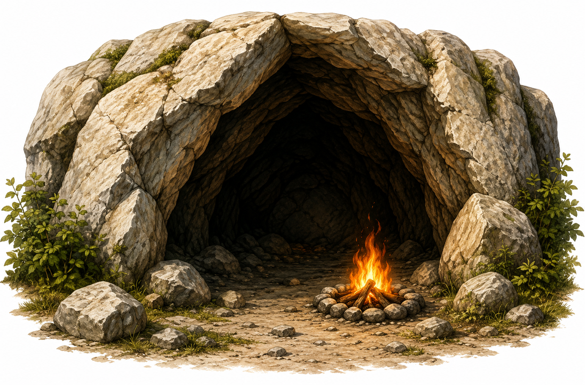
Jaskinia
Naturalne schronienie w skale.
Природне укриття в скелі.
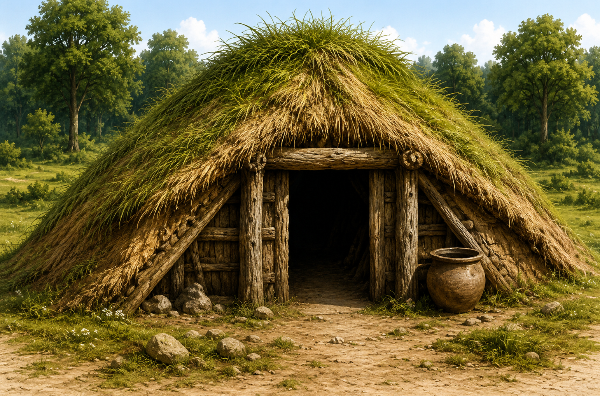
Ziemianka
Chata częściowo wykopana w ziemi.
Житло, частково заглиблене в землю.
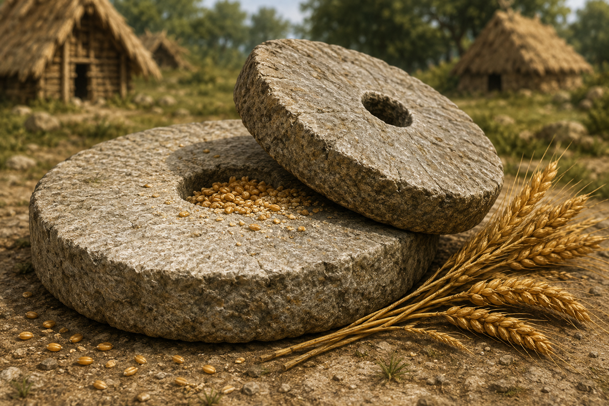
Żarna
Kamienie służące do mielenia zboża.
Камені для перемелювання зерна.
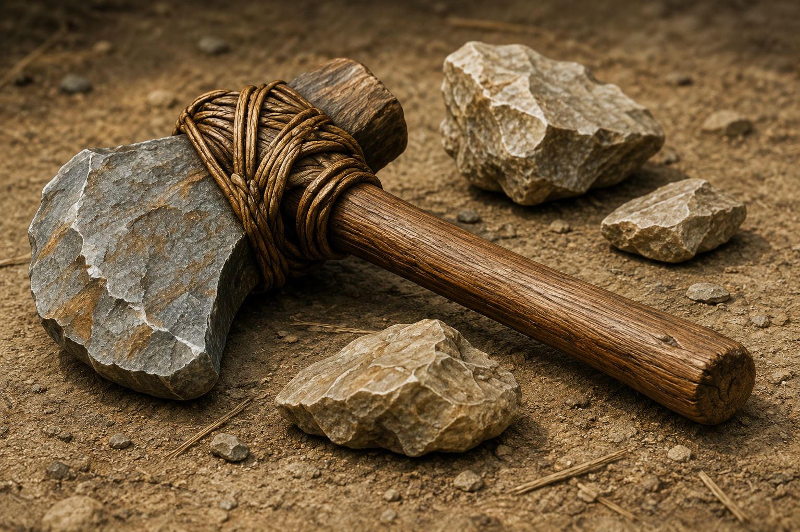
Epoka kamienia
Okres, gdy narzędzia wykonywano głównie z kamienia.
Період, коли знаряддя виготовляли переважно з каменю.
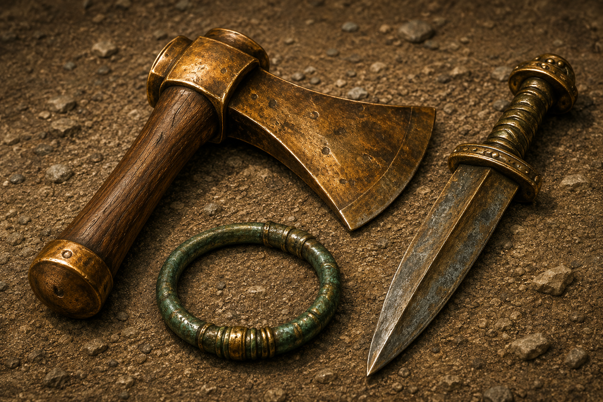
Epoka brązu
Okres, gdy zaczęto używać narzędzi z brązu.
Період, коли люди почали використовувати бронзові знаряддя.
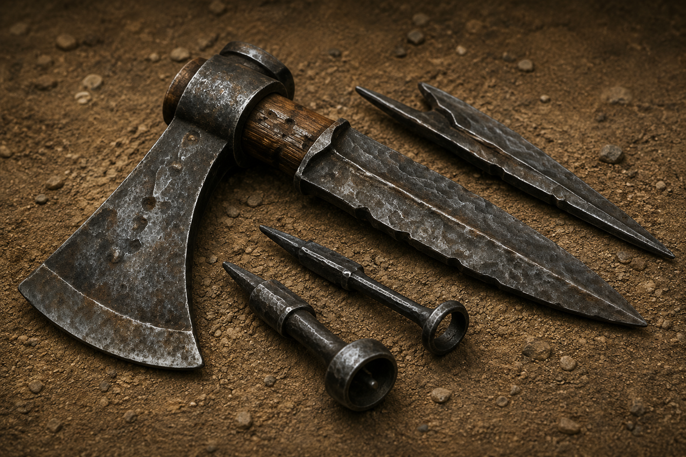
Epoka żelaza
Okres, gdy rozpowszechniły się narzędzia z żelaza.
Період поширення залізних знарядь.
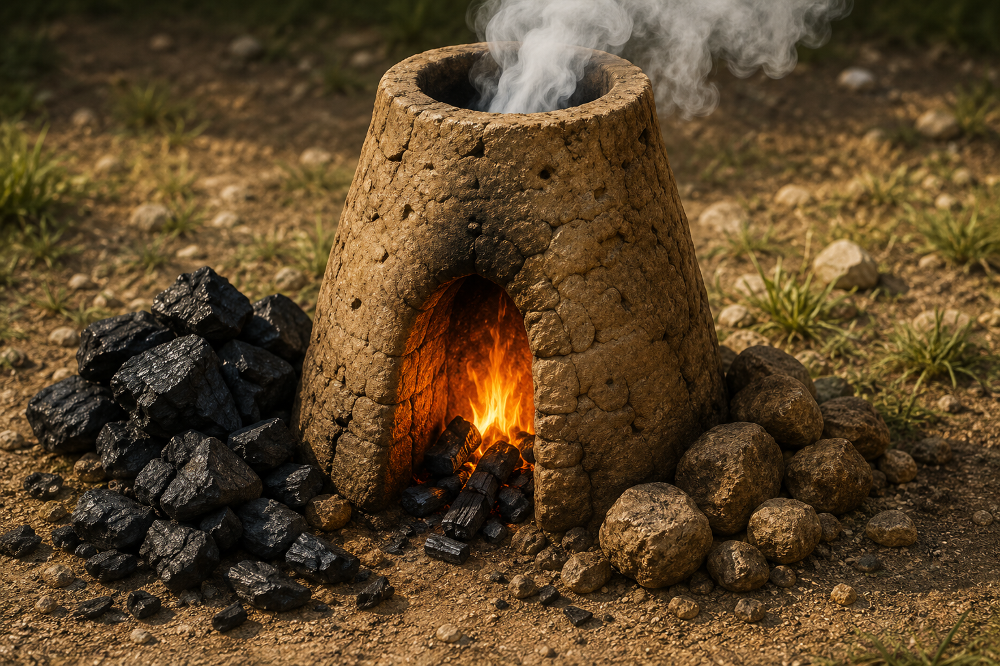
Dymarka
Piec służący do wytapiania żelaza z rudy.
Піч для виплавлення заліза з руди.
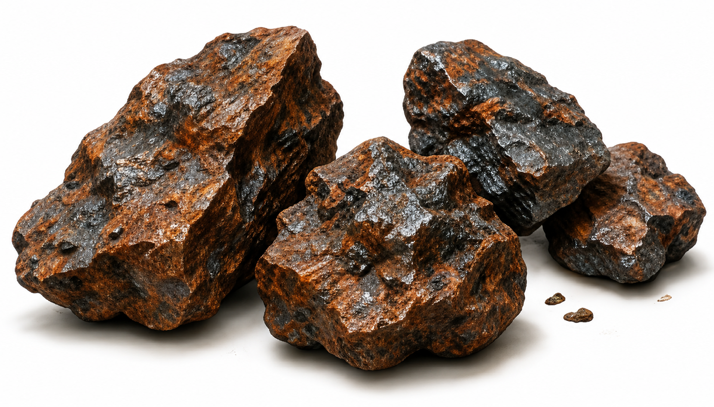
Ruda żelaza
Skała, z której otrzymuje się żelazo.
Гірська порода, з якої добувають залізо.

🦉 Sowa Historyk
Im lepiej rozumiesz nowe słowa, tym łatwiej poznajesz historię.
➜ Które słowo było dla Ciebie najciekawsze?